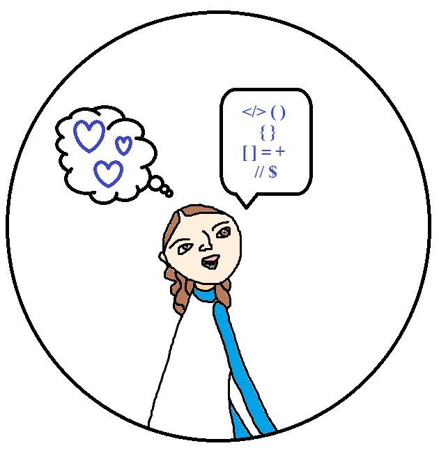

Foundations Reflection
- 
The Foundations portion of this program, that is coming to an end on this fifth week, has allowed for a huge level of self reflection - which has led to not only more discovery about who I am, but also some exciting surprises, too.
Ego, self-awareness, values and empathy
Some major things I've had the opportunity to learn about myself over this section of the course are my value for empathy towards others (and even myself!) as well as the true importance of being self-aware. These findings not only help with emotional regulation and intelligence, but also when faced with technical challenges (like wrapping my head around loops). While the values themselves may not be much use on the solving side of the challenge, they are a great help when it comes to persevering and staying on task when things are getting tricky.
Learning how these different values can actually link up with the act of solving technical problems was definitely a surprise for sure!
Challenges when it comes to the Core components
I think the most challenging part of learning the core was switching my brain back to the emotional side after having thought about technical stuff so intensely just a moment ago! While programming usually calls for a straightforward outcome, the self is a lot more fluid, with no specific outcome to be expected.
Discovering the self alongside wrapping my head around the tech
While the two subjects might seem a worlds apart, they compliment each other very much and I am happy to have had the opportunity to learn about them side by side. While one is not really required for the other, they do enhance the other. The continued integration between the two fields (so, not leaving them both as separate topics, never to cross over each other) of this knowledge would be helpful going forward.